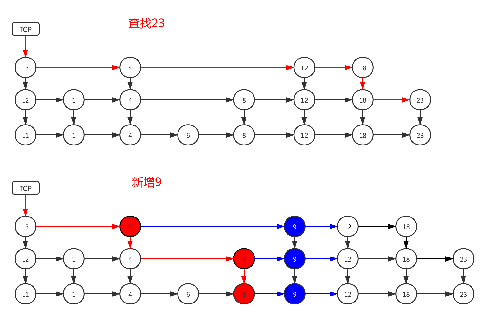

redis|skiplist
ZIPLIST
跳跃表（skiplist）是一种有序数据结构， 它通过在每个节点中维持多个指向其他节点的指针， 从而达到快速访问节点的目的。
结构定义

|
|

查找
流程
头结点的高层开始查询，看右边下一个是否是需要查找的值v，比值v大的则往下一层找，比v小的，则继续向后查找
增加
- 按照查找的逻辑遍历
- 使用数组记录节点t，t的节点值小于新插入节点的值，但t的next的值大于新插入节点的值
- 循环到最底层结束
- 将数组内的节点，都新建相关节点，以及重建连接
删除
- 按照查找的逻辑遍历
- 使用数组记录节点t，t的节点next的值等于删除节点的值v
- 循环到最底层结束
- 将数组内的节点，都删除相关节点，以及重建连接
总结
- 跳跃表是有序集合的底层实现之一， 除此之外它在 Redis 中没有其他应用。
- Redis 的跳跃表实现由 zskiplist 和 zskiplistNode 两个结构组成， 其中 zskiplist 用于保存跳跃表信息（比如表头节点、表尾节点、长度）， 而 zskiplistNode 则用于表示跳跃表节点。
- 每个跳跃表节点的层高都是 1 至 32 之间的随机数。
- 在同一个跳跃表中， 多个节点可以包含相同的分值， 但每个节点的成员对象必须是唯一的。
- 跳跃表中的节点按照分值大小进行排序， 当分值相同时， 节点按照成员对象的大小进行排序。